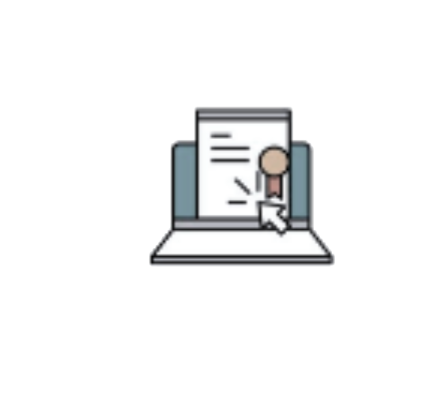
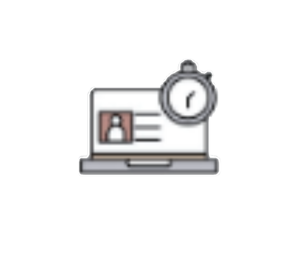

Boas Vindas!
Bem vindo(a) ao Tema Integrador I de Gestão de CarreiraAqui você encontrará todas as informações e recursos importantes para ter a melhor experiência possível no Tema Integrador, como:
- Informações sobre o funcionamento do Tema Integrador: Logo abaixo, você encontra o Cronograma do Curso, o Plano de Ensino e o Sistema de Avaliação com um tutorial.
- Tutoriais em vídeos: Preparamos para você uma série de tutoriais de curta duração sobre várias informações e recursos que poderão ser encontrados no card de sua Coordenação.
- Fóruns: Acesse no menu lateral esquerdo e interaja com seus colegas e professores-tutores.
- Momentos Síncronos: No menu, em Momentos Síncronos, você verá e terá acesso a todos os links para cada um dos momentos presenciais programados no cronograma. Acesse e programe-se para participar!
- Também no menu, você verá a estrutura de conteúdo do Tema Integrador organizado em uma Trilha de Aprendizagem. Na trilha de aprendizagem, estarão os links para acessar todas as Unidades de Aprendizagem que deverão ser estudadas ao longo do minicurso, assim como outros materiais de apoio e atividades a serem realizadas.
-

Sistema de Avaliação
-
Plano de Ensino
-

Cronograma